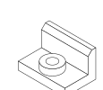

Contenido
Del boceto al sólido: recorrido guiado
Hoy se modela la pieza de ejemplo entera, de principio a fin y a la vez. Cuando abras la tuya en la próxima sesión, ya sabrás dónde está todo.

Las cuatro operaciones que necesitas
| Herramienta | Qué hace | En la pieza de ejemplo |
|---|---|---|
| Extruir | Da grosor a un boceto, añadiendo o quitando material | la base y el ala |
| Hacer revolución | Gira un boceto alrededor de un eje | el resalte cilíndrico |
| Vaciado | Ahueca el sólido dejando un espesor de pared | no se usa en esta unidad |
| Taladro | Hace agujeros normalizados | el agujero pasante |
Vaciado está en la tabla porque la vas a ver en el menú y conviene que sepas qué hace, pero ninguna de las seis piezas la necesita: las ranuras y las uves se hacen con un corte por extrusión, no vaciando.
La lista de operaciones
A la izquierda se va escribiendo la historia del modelo: cada operación en el orden en que la hiciste. No es un registro muerto — puedes volver a cualquier paso, cambiarlo, y todo lo posterior se recalcula.
Por eso importa el orden
Modelar bien no es solo llegar a la forma: es dejar una lista que otra persona —o tú dentro de un mes— pueda entender y modificar. Es exactamente lo mismo que acotar bien.
Al terminar la sesión
Gira la pieza de ejemplo con el cubo de vista y compárala con las vistas de tu lámina 2. El cubo rotula Alzado, Planta y Derecha: el alzado y la planta te valen tal cual, pero tu lámina lleva el perfil izquierdo, que es el lado contrario. Gira el cubo hasta ver la pieza por su izquierda. Si la comparas con la «Derecha» sin girar, te saldrá todo al revés en cuanto la pieza no sea simétrica. Aquí es donde el dibujo a mano y el 3D se juntan.
Relaciona
Relaciona cada herramienta con lo que hace.
Relaciona cada herramienta con lo que hace.
", "showMinimize": false, "itinerary": {"showClue": false, "clueGame": "", "percentageClue": 40, "showCodeAccess": false, "codeAccess": "", "messageCodeAccess": ""}, "cardsGame": [{"url": "", "x": 0, "y": 0, "author": "", "alt": "", "audio": "", "color": "#000000", "backcolor": "#ffffff", "eText": "Extruir", "urlBk": "", "xBk": 0, "yBk": 0, "authorBk": "", "altBk": "", "audioBk": "", "colorBk": "#000000", "backcolorBk": "#ffffff", "eTextBk": "Da%20grosor%20a%20un%20boceto%2C%20a%C3%B1adiendo%20o%20quitando%20material"}, {"url": "", "x": 0, "y": 0, "author": "", "alt": "", "audio": "", "color": "#000000", "backcolor": "#ffffff", "eText": "Hacer%20revoluci%C3%B3n", "urlBk": "", "xBk": 0, "yBk": 0, "authorBk": "", "altBk": "", "audioBk": "", "colorBk": "#000000", "backcolorBk": "#ffffff", "eTextBk": "Gira%20un%20boceto%20alrededor%20de%20un%20eje"}, {"url": "", "x": 0, "y": 0, "author": "", "alt": "", "audio": "", "color": "#000000", "backcolor": "#ffffff", "eText": "Vaciado", "urlBk": "", "xBk": 0, "yBk": 0, "authorBk": "", "altBk": "", "audioBk": "", "colorBk": "#000000", "backcolorBk": "#ffffff", "eTextBk": "Ahueca%20el%20s%C3%B3lido%20dejando%20un%20espesor%20de%20pared"}, {"url": "", "x": 0, "y": 0, "author": "", "alt": "", "audio": "", "color": "#000000", "backcolor": "#ffffff", "eText": "Taladro", "urlBk": "", "xBk": 0, "yBk": 0, "authorBk": "", "altBk": "", "audioBk": "", "colorBk": "#000000", "backcolorBk": "#ffffff", "eTextBk": "Hace%20agujeros%20normalizados"}, {"url": "", "x": 0, "y": 0, "author": "", "alt": "", "audio": "", "color": "#000000", "backcolor": "#ffffff", "eText": "Redondeo", "urlBk": "", "xBk": 0, "yBk": 0, "authorBk": "", "altBk": "", "audioBk": "", "colorBk": "#000000", "backcolorBk": "#ffffff", "eTextBk": "Sustituye%20una%20arista%20viva%20por%20una%20superficie%20curva"}, {"url": "", "x": 0, "y": 0, "author": "", "alt": "", "audio": "", "color": "#000000", "backcolor": "#ffffff", "eText": "Chafl%C3%A1n", "urlBk": "", "xBk": 0, "yBk": 0, "authorBk": "", "altBk": "", "audioBk": "", "colorBk": "#000000", "backcolorBk": "#ffffff", "eTextBk": "Sustituye%20una%20arista%20viva%20por%20un%20plano%20inclinado"}], "isScorm": 0, "textButtonScorm": "Guardar la puntuación", "repeatActivity": true, "weighted": 100, "textAfter": "", "version": 2, "percentajeCards": 100, "type": 0, "showSolution": true, "timeShowSolution": 3, "time": 3, "evaluation": false, "evaluationID": "f96bc37c-5aaf-40e4-af65-a544218a46a6", "id": "idevice-1786024275602-j6j7mk5r9", "msgs": {"msgSubmit": "Enviar", "msgClue": "¡Genial! La pista es:", "msgCodeAccess": "Código de acceso", "msgPlayStart": "Pulsa aquí para jugar", "msgScore": "Puntuación", "msgErrors": "Errores", "msgHits": "Aciertos", "msgMinimize": "Minimizar", "msgMaximize": "Maximizar", "msgFullScreen": "Pantalla Completa", "msgExitFullScreen": "Salir del modo pantalla completa", "msgNoImage": "Pregunta sin imágenes", "msgEndGameScore": "Comience la partida antes de guardar la puntuación.", "msgScoreScorm": "La puntuación no se puede guardar porque esta página no forma parte de un paquete SCORM.", "msgOnlySaveScore": "¡Solo puede guardar la puntuación una vez!", "msgOnlySave": "Solo puede guardar una vez", "msgInformation": "Información", "msgYouScore": "Su puntuación", "msgAuthor": "Autoría", "msgOnlySaveAuto": "Su puntuación se guardará después de cada pregunta. Solo puede jugar una vez.", "msgSaveAuto": "Su puntuación se guardará automáticamente después de cada pregunta.", "msgSeveralScore": "Puede guardar la puntuación tantas veces como quiera", "msgYouLastScore": "La última puntuación guardada es", "msgActityComply": "Ya ha realizado esta actividad.", "msgPlaySeveralTimes": "Puede realizar esta actividad cuantas veces quiera", "msgClose": "Cerrar", "msgAudio": "Audio", "msgNumQuestions": "Número de tarjetas", "msgTryAgain": "Necesitas al menos %s% de respuestas correctas para obtener la información. Inténtalo de nuevo.", "msgEndGameM": "Has completado el juego. Tu puntuación es %s.", "msgUncompletedActivity": "Actividad no completada", "msgSuccessfulActivity": "Actividad superada. Puntuación: %s", "msgUnsuccessfulActivity": "Actividad no superada. Puntuación: %s", "msgTypeGame": "Relaciona", "msgCheck": "Comprobar", "msgRestart": "Reiniciar"}}